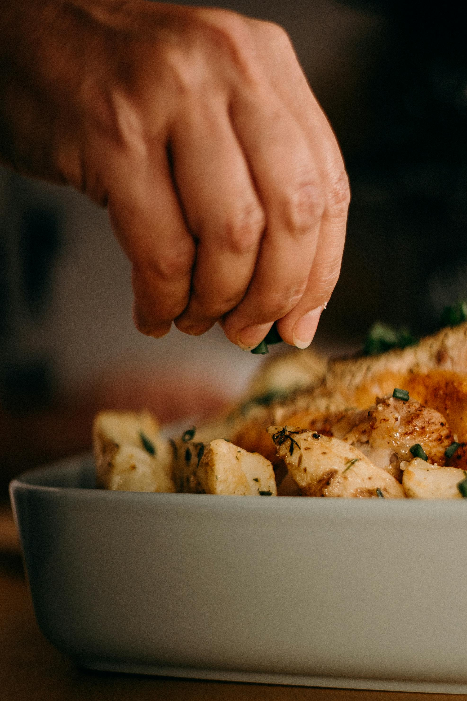

Herb Roasted Potatoes

Description
These herb roasted potatoes are crispy on the outside, soft on the inside, and packed with flavor.
Tossed in olive oil, garlic, and herbs, they make a perfect side dish for chicken, beef, or seafood.
Ingredients
- 1.5 lbs (700 g) baby potatoes, halved or quartered
- 2 tablespoons olive oil
- 1 teaspoon garlic powder
- 1 teaspoon dried rosemary
- ½ teaspoon thyme
- Salt and black pepper, to taste
- Optional: grated Parmesan or fresh parsley for garnish
Steps
- Preheat Oven: Preheat your oven to 425°F (220°C).
- Season Potatoes: In a large bowl, toss the potatoes with olive oil, garlic powder, rosemary, thyme, salt, and pepper until well coated.
- Roast: Spread the potatoes on a baking sheet in a single layer. Roast for 25–30 minutes, flipping halfway through, until golden brown and crispy.
- Garnish and Serve: Optionally, sprinkle with grated Parmesan or chopped parsley before serving.
Home